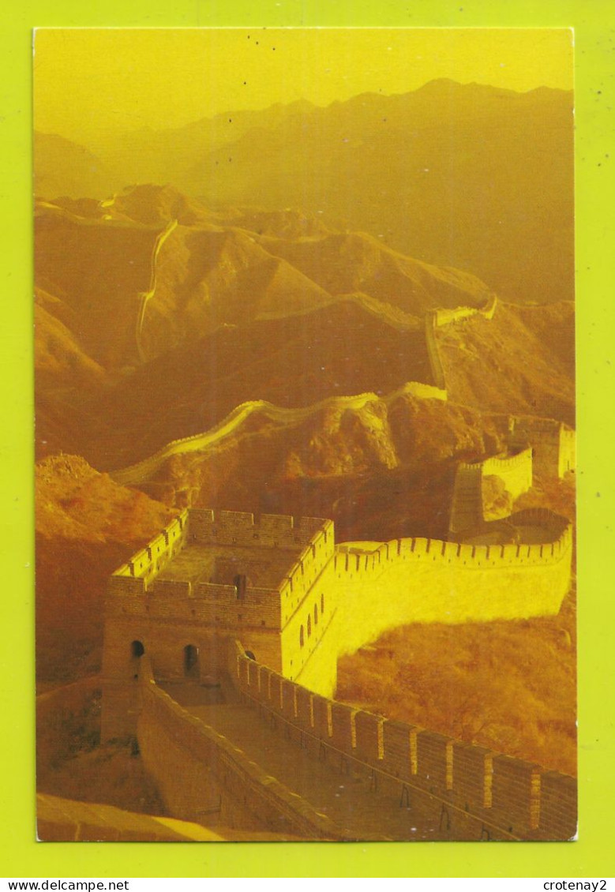

Công ty du lịch Hoàn Mỹ giới thiệu hành trình khám phá Trung Hoa: chinh phục Vạn Lý Trường Thành, ghé Thập Tam Lăng, tham quan Cung Điện Mùa Hè-nơi Từ Hy Thái Hậu cho"đào hồ, đắp núi, xây chùa".
Du khách còn được dạo quảng trường Thiên An Môn, chiêm ngưỡng Cố Cung, thưởng thức vịt quay Bắc Kinh. Tiếp đó là Thượng Hải với vườn Dự Viên và khu lầu Vạn Quốc bên bến sông Hoàng Phổ.
Hành trình khép lại ở Hàng Châu-nơi có sự tích"cầu gãy mà không gãy"gắn với chuyện Lương Sơn Bá-Chúc Anh Đài, cùng thiên đường mua sắm ngọc trai quý hiếm.